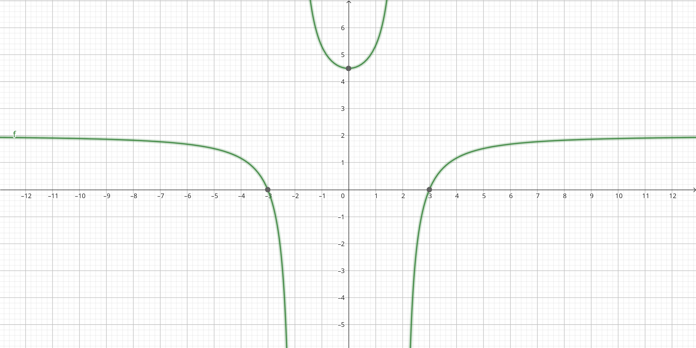

Ejemplo 1: Aplicación de la derivada
Analizar la gráfica de $f(x) = \frac{2(x^{2}-9)}{x^{2}-4}$
Primera derivada:
$f'(x) = \frac{20x}{(x^{2}-4)^{2}}$
Segunda derivada:
$f''(x) = \frac{-20x(3x^{2}+4)}{(x^{2}-4)^{3}}$
Intersecciones con el eje $x$: $(-3, 0), (3, 0)$
Intersección con el eje $y$: $(0, \frac{9}{2})$
Asintotas verticales: $x=-2, x=2$
Asintota horizontal: $y=2$
Numero critico: $x = 0$
Posibles puntos de inflexión: Ninguno
